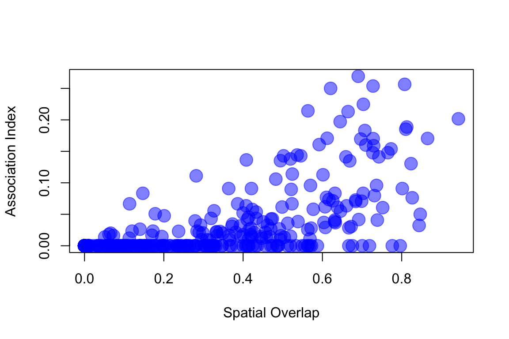

Worked Example: Analyzing the Sparrow Flock Networks Across Two Years
Dai Shizuka
updated 06/14/19

In this exercise, we will use data from our ongoing study on social networks of flock membership in a wintering population of golden-crowned sparrows, Zonotrichia atricapilla (Shizuka et al. 2014)3. Golden-crowned sparrows are long distance migrants that breed in western Canada and Alaska and winter along the west coast of mainland US. This work is based at a small (~7 ha) field site in California (UC Santa Cruz Arboretum) where golden-crowned sparrows are abundant during the non-breeding season (October-March). Since 2009, my colleagues and I have been collecting data on which individually-marked sparrows are observed together in flocks (typically 2-10 birds), defined as a collection of individuals within a 5m radius during a given observation. Flock membership changes within minutes—some birds leave and other birds join. Each year, we built a social network based on flock co-membership. In this paper, we showed that the social networks of wintering sparrows are highly clustered, with ‘social communities’ of individuals that flock together throughout the season. These social communities are somewhat fluid and spatially overlapping. Nevertheless, they seem to be quite stable across years–i.e., all birds leave for the breeding season, but those that come back tend to form the same clusters again. Moreover, we show using MRQAP analysis that past association (association index from the previous year) is a better predictor of current flock associations than a metric of home range overlap. That is, given that two individuals overlap in space, they are more likely to flock together if they had flocked together often in the previous year–a potential signature of social fidelity that bridges years.
I detail the process of making a network from raw observation data in another worked example (Worked Example: Constructing Flock Network of Golden-crowned Sparrows). Let’s consolidate the codes shown in that tutorial in one script here:
library(tidyr) #or you can just load the whole tidyverse with library(tidyverse)
library(asnipe)
library(igraph)flock2=read.csv('https://datadryad.org/bitstream/handle/10255/dryad.63925/Flock_Season2_Dryad.csv')
flock3=read.csv('https://datadryad.org/bitstream/handle/10255/dryad.63926/Flock_Season3_Dryad.csv')
head(flock2)## Date Time Location Bird1 Bird2 Bird3 Bird4 Bird5 Bird6 Bird7
## 1 10/12/2010 10:00 S29 23734 NA NA NA NA NA NA
## 2 10/12/2010 10:15 B19 23773 23862 23774 NA NA NA NA
## 3 10/12/2010 10:45 S29 23734 NA NA NA NA NA NA
## 4 10/12/2010 10:45 B19 23773 23862 23774 NA NA NA NA
## 5 10/13/2010 9:11 X28 23778 23809 NA NA NA NA NA
## 6 10/13/2010 9:22 S23 23734 NA NA NA NA NA NA
## Bird8 Bird9 Bird10
## 1 NA NA NA
## 2 NA NA NA
## 3 NA NA NA
## 4 NA NA NA
## 5 NA NA NA
## 6 NA NA NAflock.list=list(flock2, flock3)m.list=lapply(flock.list, function(x) {
birdcols=grep("Bird",colnames(x))
ids=unique(gather(x[,birdcols])$value)
ids=ids[is.na(ids)==F&ids!=""&ids!=" "]
m1=apply(x[,birdcols],1,function(y) match(ids,y))
m1[is.na(m1)]=0
m1[m1>0]=1
rownames(m1)=ids #rows are bird ids
colnames(m1)=paste('flock', 1:ncol(m1), sep="_") #columns are flock IDs (just "flock_#")
m2=m1[which(rowSums(m1)>3),]
m2
})
adjs=lapply(m.list, function(x) get_network(t(x), data_format="GBI", association_index = "SRI")) # the adjacency matrix## Generating 39 x 39 matrix
## Generating 26 x 26 matrixgs=lapply(adjs, function(x) graph_from_adjacency_matrix(x, "undirected", weighted=T))#the igraph object
gs## [[1]]
## IGRAPH c5a47fc UNW- 39 312 --
## + attr: name (v/c), weight (e/n)
## + edges from c5a47fc (vertex names):
## [1] 23734--23778 23734--23809 23734--23772 23734--7623 23734--7614
## [6] 23773--23778 23773--23732 23773--23774 23773--23862 23773--7615
## [11] 23773--7636 23773--23891 23773--23772 23773--23777 23773--7627
## [16] 23773--23781 23773--23762 23773--23815 23773--23978 23773--23770
## [21] 23773--23771 23773--23758 23778--23809 23778--23774 23778--23862
## [26] 23778--7615 23778--23772 23778--23777 23778--7627 23778--23781
## [31] 23778--23762 23778--23815 23778--23761 23778--7614 23778--7619
## [36] 23778--7609 23778--23771 23778--7633 23778--23831 23732--23774
## + ... omitted several edges
##
## [[2]]
## IGRAPH 79a7c0c UNW- 26 143 --
## + attr: name (v/c), weight (e/n)
## + edges from 79a7c0c (vertex names):
## [1] 7660 --23815 7660 --23853 7660 --7635 7660 --7673 7660 --23862
## [6] 7660 --23854 7660 --7658 7660 --7609 7660 --7615 7660 --23778
## [11] 7660 --23770 7660 --7680 7668 --23815 7668 --23774 7668 --7673
## [16] 7668 --23862 7668 --23773 7668 --7636 7668 --23778 7668 --23770
## [21] 7668 --7667 7668 --7637 23815--7635 23815--23774 23815--7673
## [26] 23815--23862 23815--23854 23815--23773 23815--7609 23815--7615
## [31] 23815--7636 23815--23778 23815--23770 23815--7667 23815--7637
## [36] 7659 --23853 7659 --7635 7659 --7612 7659 --7609 7659 --7684
## + ... omitted several edgesNow, let’s plot these networks side-by-side.
seasons=c("Season 2", "Season 3") # save for plot title
default=par() #save default graphical parameters first
par(mfrow=c(1,2)) #set up to plot networks side-by-side
for(i in 1:2){
plot(gs[[i]], edge.width=E(gs[[i]])$weight*10, vertex.label="", vertex.color="gold1", vertex.size=10,edge.color="gray10", main=paste(seasons[i]))
}par(default)Modularity of the networks
One of the first things we did in this study is to determine whether there were discrete clusters in this network that would suggest that there are multiple social communities within this small study area.
coms=lapply(gs, function(x) cluster_fast_greedy(x)) #apply community detection function to each network
mods=sapply(coms, modularity) #calculate modularity based on community assignments
com.colors=list(c("blue", "yellow", "green", "red"), c("green", "blue", "red", "yellow")) # assign colors to communities. Community colors are in different order for each year because community ID number depends on the order of nodes that belong to them.
set.seed(10) #make plots reproducible
par(mfrow=c(1,2))
for(i in 1:2){
l=layout_with_fr(gs[[i]])
V(gs[[i]])$color=com.colors[[i]][membership(coms[[i]])]
plot(gs[[i]], layout=l, edge.width=E(gs[[i]])$weight*10, vertex.label="", vertex.size=10,edge.color="gray10", main=paste(seasons[i], ": Modularity=", round(mods[[i]], 2)))
}par(default)In both years, the network appears to be highly clustered. The colors of the clusters are assigned based on the consistency of the home ranges of each community across years (see Shizuka et al. 2014 for details).
Note: Here and in the paper, we used a ‘fast and greedy’ community detection algorithm (Clauset, Newman & Moore 2004) because it performed best on our networks. More recently, I have confirmed that an alternative method called Simulated Annealing (which is reported to perform better on smaller networks: Guimerà and Amaral, 2005) yields nearly identical results.
Testing modularity of empirical network against randomized networks
Randomized networks using group membership swaps
To see whether this pattern of network clustering is meaningful, we want to compare this against some kind of null model. For networks based on association data (e.g., individuals in groups), the basic null model should be constructed using a ‘group membership swap’ method first proposed by Manly (1995) and adapted to animal social data by Bejder (1998). The method is reviewed in detail in Whitehead et al. (2005). See the earlier section on group membership swaps in this handbook (Section 5.3). This swapping algorithm is available in two different functions within the asnipe package: network_swap() and network_permutation(). The two function are slightly different in how their outputs and are useful for different reasons.
There are generally two ways to generate a P-value using the group membership swapping algorithm. First, one could repeat the swaps until the test statistic of interest stabilizes to a range of values corresponding to a randomized matrix, and then repeat this procedure a large number of times to calculate a distribution of the test statistic under the null model (let’s call it the ‘global test’). Alternatively, one can run a large number of swaps from a single initial matrix, calculating a test statistic after each ‘swap’ of the matrix, and compare this distribution against the empirical test statistic (‘serial test’). Manly (1995) discusses why the serial method is a valid method for testing whether the empirical matrix is non-random as long as we conduct a very large number of swaps. The ‘serial test’ method is much more computationally efficient than the ‘global test’. In the paper, we used the ‘global method’ in which we conducted a large number of swaps and repeated this procedure 1,000 times. Below, I will show how to generate P-values using both the ‘global’ and ‘serial’ methods.
Global test: Let’s do 100 runs of the group membership swapping, with 500 swaps per run (in the paper, we conducted 1,000 runs of ~5,000 swaps). We will calculate modularity at the end of each iteration and then generate a histogram.
gbi=t(m.list[[1]])
swap.m=list()
times=100
for (k in 1:times){
swap.m[[k]]=network_swap(gbi, swaps=500)$Association_index }
swap.g=lapply(swap.m, function(x) graph_from_adjacency_matrix(x, "undirected", weighted=T))
mod.swap=sapply(swap.g, function(x) modularity(cluster_fast_greedy(x)))hist(mod.swap, xlim=c(min(mod.swap), mods[[1]]))
abline(v=mods[[1]], col="red", lty=2, lwd=2)
p=(length(which(mod.swap>=mods[[1]]))+1)/(times+1)
p## [1] 0.00990099
Serial Method:
gbi2=t(m.list[[1]])
assoc2=get_network(gbi2)## Generating 39 x 39 matrixnet.perm=network_permutation(gbi2, permutations=10000, returns=1, association_matrix = assoc2)## Starting permutations, generating 10000 x 39 x 39 matrixswap.g2=apply(net.perm, 1, function(x) graph_from_adjacency_matrix(x,"undirected", weighted=T))
mod.swap2=sapply(swap.g2, function(x) modularity(cluster_fast_greedy(x)))
hist(mod.swap2,xlim=c(min(mod.swap2), mods[[1]]), main="Serial Method")
abline(v=mods[[1]], col="red", lty=2, lwd=2) p=(length(which(mod.swap2>=mods[[1]]))+1)/100001
p## [1] 9.9999e-06In either case, the empirical modularity value is much larger than what we expect from random. However, the P-values are different because we are comparing the empirical test statistic against a much larger pool of randomized values in the ‘serial method’ test (10,000 vs. 100).
Bootstrapping to account for sampling error
Above, we compared the single empirical value of modularity against a distribution of modularity values generated from randomizing the network. But what about the error around the empirical modularity value itself? Given that we did not sample all flocks existing throughout the season, there must be error associated with this empirical modularity value as well. One popular way to account for sampling error in all areas of ecology is resampling–i.e., randomly picking a subset of observations (e.g., jackknifing) or randomly resampling the data while holding sample size constant (e.g., bootstrapping). We can use a bootstrapping scheme to generate a distribution of modularity values associated with our empirical network. NOTE, however, that there are some inherent difficulties in using bootstrapping to estimate error in modularity–namely, the bootstrapped network may result in different numbers of communities, which affects the modularity value (discussed in Shizuka & Farine 2016). For now, I will simply demonstrate how to implement a bootstrapping procedure on the individual-by-group matrix and use this to generate a simple distribution of modularity values without getting into these confounding effects. To implement the bootstrapping procedure, we will resample with replacement the observed flocks (columns of the individual-by-group matrix) and recalculate the modularity value using the same community detection algorithm as we used on the empirical (and the randomization scheme above). We will repeat this 100 times.
com.boot=vector(length=100) #set up empty vector
for (i in 1:100){
s.col=sample(1:ncol(m.list[[1]]), ncol(m.list[[1]]), replace=T) #sample with replacement the columns
nm1=m.list[[1]][,s.col] #create new matrix using resampled columns
g.boot=graph_from_adjacency_matrix(get_network(t(nm1)), "undirected", weighted=T) #bootstrapped network
com.boot[i]=modularity(cluster_fast_greedy(g.boot)) #calculate modularity using fast_greedy community detection
}boxplot(com.boot, ylab="Modularity", las=1)We can compare the modularity values generated from this bootstrapping scheme against the modularity values generated from the randomization (i.e., group membership swap) presented above.
boxplot(mod.swap2[1000:10000], com.boot, col="gray", las=1, names=c("Null", "Empirical \n(bootstrap)"), ylab="Modularity")Note: In the actual study, we used a second type of randomization scheme, which we call the “spatial null model”, which accounts for the home ranges of each individual and the location of each flock observation (not presented here). Figure 2 from the Shizuka et al. (2014) paper presents the resulting distributions of modularity values from the two randomization schemes (group membership swap & spatial flock model) and the bootstrapped empirical values.
Testing the consistency of association patterns between years
One of the goals of this study was to determine whether flock association patterns were consistent across years–i.e., do birds re-create the social networks year to year? To test for this pattern for each pair of years, we filtered the networks to those individuals that were seen in both years and then conducted a Mantel Test to see if association indices were correlated across years. Here is one way to conduct this analysis using the ‘ecodist’ package for its Mantel test function:
library(ecodist)
#restrict comparison to individuals that were seen in two sequential years
id12=rownames(adjs[[1]])[rownames(adjs[[1]])%in%rownames(adjs[[2]])] #get IDs of birds that were present in both networks
ids.m1=match(id12,rownames(adjs[[1]])) #get row/columns of those individuals in matrix 1
ids.m2=match(id12,rownames(adjs[[2]])) #get row/colums of those individuals in matrix 2
m12=adjs[[1]][ids.m1,ids.m1] #matrix 1 of association indices of only returning individuals
m21=adjs[[2]][ids.m2,ids.m2] #matrix 2 of association indices of only returning individuals
m12=m12[order(rownames(m12)),order(rownames(m12))] #reorder the rows/columns by alphanumeric order
m21=m21[order(rownames(m21)),order(rownames(m21))] #reorder the rows/columns by alphanumeric order
mantel12=mantel(as.dist(m12)~as.dist(m21))
mantel12## mantelr pval1 pval2 pval3 llim.2.5% ulim.97.5%
## 0.7393206 0.0010000 1.0000000 0.0010000 0.6370620 0.8402951So the Mantel r coefficient = 0.74, a very high correlation of association indices across years. One way to visualize this is to simply plot the association indices from Season 2 against those of Season 3. Here, I’m only going to plot the values for the upper triangle of the adjacency matrix, since the matrix is symmetrical. I’m also going to use the rgb() function to make transparent red circles to plot so that we can see the overlapping points.
plot(m12[upper.tri(m12)], m21[upper.tri(m21)], pch=19, col=rgb(1,0,0,0.5), cex=2, xlab="Season 2 Association Index", ylab="Season 3 Association Index")Using MRQAP to test for the effects of spatial overlap and previous year’s association
The Mantel Test and the plot above shows us that there is significant correlation between the association indices across years–i.e., birds flock with the same individuals each year. However, this effect could simply be driven by the fact that these birds are faithful to their home ranges rather than their social associates. This is important because there is no doubt that spatial overlap influences social associations (it has to, since associations are measured as co-occurrence in time and space). For example, if we import a matrix of spatial overlap between each pair of each individual (measured as the proportion of joint home range that is shared) and plot the association index relative to this measure, we get this:
s3=as.matrix(read.csv("GCSPspaceoverlap3.csv", header=T, row.names=1))
ids.s3=match(rownames(s3), rownames(adjs[[2]]))
ids.s3=na.omit(ids.s3)
ids.adj2=match(rownames(adjs[[2]]), rownames(s3) )
ids.adj2=na.omit(ids.adj2)
s3.use=s3[ids.s3, ids.s3]
adj.use=adjs[[2]][ids.adj2, ids.adj2]
s3.use=s3.use[order(rownames(s3.use)),order(rownames(s3.use))]
adj.use=adj.use[order(rownames(adj.use)),order(rownames(adj.use))]
plot(s3.use[upper.tri(s3.use)], adj.use[upper.tri(adj.use)], pch=19, cex=2, col=rgb(0,0,1, 0.5), xlab="Spatial Overlap", ylab="Association Index")
So how can we test for the effect of the previous year’s association on the current year’s association while taking into account the amount of spatial overlap in home ranges? This is where MRQAP (aka ‘network regression’) comes in. Here, we can use the ‘spatial overlap matrix’ and ‘previous year’s adjacency matrix’ as covariates to test their effects on the ‘current year adjacency matrix’. Briefly, the MRQAP with Double-Semipartialing (Krackhardt 1988; Dekker et al. 2007) is related to the Mantel Test, but permutes the residual matrix from each independent variable to calculate the effect of each variable on the response variable matrix. I recommend reading Dekker et al. (2007) for details on the method. We can implement MRQAP in ‘asnipe’ or ‘sna’ packages. Here, I will demonstrate its application with the ‘asnipe’ package. First, let’s make the spatial overlap matrix restricted to the individuals that are included in both seasons, and sorted in the same way as the adjacency matrices:
s3.match=s3.use[match(rownames(m21),rownames(s3.use)), match(rownames(m21),rownames(s3.use))] #sort rows and columns to match the adjacency matrixNow we have already made the relevant matrices: adjacency matrix of Season 3 (dependent variable), adjacency matrix of Season 2 (independent variable 1), spatial overlap matrix of Season 3 (independent variable 2), each with only birds that are in both seasons. We can now run the MRQAP model:
mrqap.dsp(m21~m12 + s3.match)## MRQAP with Double-Semi-Partialing (DSP)
##
## Formula: m21 ~ m12 + s3.match
##
## Coefficients:
## Estimate P(β>=r) P(β<=r) P(|β|<=|r|)
## intercept -0.01749305 0.068 0.932 0.069
## m12 0.45328523 1.000 0.000 0.000
## s3.match 0.12343038 1.000 0.000 0.000
##
## Residual standard error: 0.04051 on 88 degrees of freedom
## F-statistic: 98.65 on 2 and 88 degrees of freedom, p-value: 0
## Multiple R-squared: 0.6915 Adjusted R-squared: 0.6845
## AIC: -35.74197You can see that both of the independent variables, spatial overlap (s3.match) and the adjacency matrix of the previous year (m12) are significant predictors of the current year’s adjacency matrix. The overall fit of the model is very good (adjusted \(R^2 = 0.67\)), which suggests that these two variables explain a great deal of the variation in pairwise flock associations. We can’t really compare the magnitudes of effect here (despite what we said in the paper…) because we did not scale the two independnet matrices before running the model…
But we can try it here!
mrqap.dsp(scale(m21)~scale(m12) + scale(s3.match))## MRQAP with Double-Semi-Partialing (DSP)
##
## Formula: scale(m21) ~ scale(m12) + scale(s3.match)
##
## Coefficients:
## Estimate P(β>=r) P(β<=r) P(|β|<=|r|)
## intercept 0.01269215 0.551 0.449 0.722
## scale(m12) 0.43393270 1.000 0.000 0.000
## scale(s3.match) 0.53650775 1.000 0.000 0.000
##
## Residual standard error: 0.6302 on 88 degrees of freedom
## F-statistic: 83.06 on 2 and 88 degrees of freedom, p-value: 0
## Multiple R-squared: 0.6537 Adjusted R-squared: 0.6458
## AIC: -88.04498Now, these results suggest that the effect of home range overlap (0.54) is slightly greater than the effect of previous year’s associations (0.43), but still, there is quite a significant pattern for preferentially flocking with last year’s flock-mates.